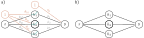
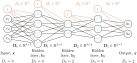
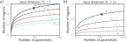
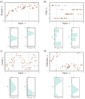
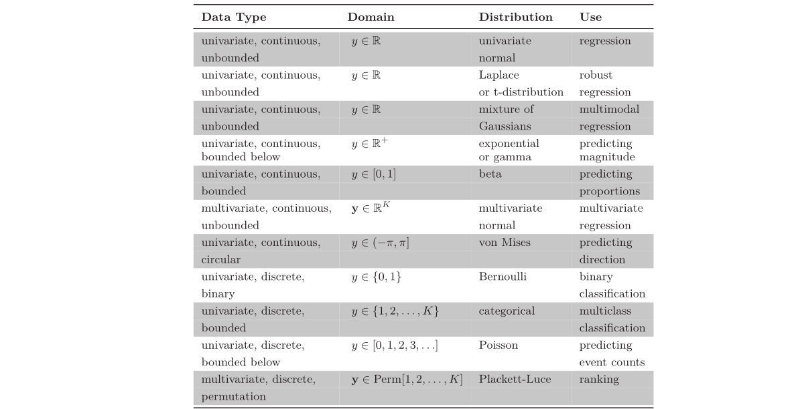
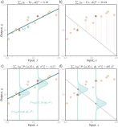

Introduction to Deep Neural Networks: Mathematical Foundations and Architectures
1. Shallow neural networks
Let \(\text{x}=(x_1,...,x_n)\in \mathbb{R}^n\) be a multivariate input and \(\text{y}=(y_1,...,y_m)\in \mathbb{R}^m\) a multivariate output \((n,m>0)\). Shallow neural networks are functions with parameters
\[\begin{align*} \phi=\{\phi_{10},...,\phi_{1d},..., \phi_{m0},...,\phi_{md},\theta_{10},..., \theta_{d0},...,\theta_{1n},..., \theta_{dn}\}, \end{align*}\]
where \(d\) is the number of activation functions a[•].
Case \(n=m=1, d=3\):
\[\begin{align*} y &= f[x, \boldsymbol{\phi}] \\ &= \phi_0 + \phi_1 a [\theta_{10} + \theta_{11} x] + \phi_2 a [\theta_{20} + \theta_{21} x] + \phi_3 a [\theta_{30} + \theta_{31} x]. \end{align*}\]

We can break down this calculation into three parts:
- Compute three linear functions of the input data \((\theta_{10} + \theta_{11} x, \theta_{20} + \theta_{21} x, \theta_{30} + \theta_{31} x)\)
- Pass the three results through an activation function a[•]
- Weight the three resulting activations with \(\theta_1\) , \(\theta_2\) , and \(\theta_3\) , sum them, and add an offset \(\theta_0\).
To complete the description, we must define the activation function a[•]. There are many possibilities, but the hyperbolic tangent function is commonly used as an activation function in Physics-Informed Neural Networks (PINNs) due to its smooth and differentiable nature.
\[\begin{align*} a[z] &= \tanh[z] = \begin{cases} -1 & z \ll 0 \\ z & |z| \approx 0 \\ 1 & z \gg 0 \end{cases} \end{align*}\]
Some advantages of using \(\tanh\) in PINNs include:
- Smoothness: Unlike ReLU, \(\tanh\) is infinitely differentiable, which is beneficial for enforcing physical constraints that involve higher-order derivatives.
- Symmetry: It is symmetric around the origin, making it useful for capturing variations in both positive and negative directions.
- Better Gradient Flow: Compared to sigmoid, \(\tanh\) has a steeper gradient, reducing the risk of vanishing gradients in deep networks.
- Physical Interpretability: In many physical systems, solutions naturally exhibit smooth transitions, which \(\tanh\) can better approximate.
This section masterfully bridges theoretical foundations (parameterized functions) with practical considerations (activation function selection), demonstrating how mathematical abstraction serves applied goals. The deliberate decomposition and domain-aware justification reveal expert knowledge organization - transforming complex concepts into teachable components while maintaining scientific rigor.
2. Deep neural networks
General formulation
We will describe the vector of hidden units at layer \(k\) as \(\mathbf{h}_k\), the vector of biases (intercepts) that contribute to hidden layer \(k+1\) as \(\boldsymbol{\beta}_k\), and the weights (slopes) that are applied to the \(k^{th}\) layer and contribute to the \((k+1)^{th}\) layer as \(\boldsymbol{\Omega}_k\). A general deep network \(\mathbf{y} = f[\mathbf{x}, \phi]\) with \(K\) layers can now be written as:
\[\begin{aligned} \mathbf{h}_1 &= a[\boldsymbol{\beta}_0 + \boldsymbol{\Omega}_0 \mathbf{x}] \\ \mathbf{h}_2 &= a[\boldsymbol{\beta}_1 + \boldsymbol{\Omega}_1 \mathbf{h}_1] \\ \mathbf{h}_3 &= a[\boldsymbol{\beta}_2 + \boldsymbol{\Omega}_2 \mathbf{h}_2] \\ &\vdots \\ \mathbf{h}_K &= a[\boldsymbol{\beta}_{K-1} + \boldsymbol{\Omega}_{K-1} \mathbf{h}_{K-1}] \\ \mathbf{y} &= \boldsymbol{\beta}_K + \boldsymbol{\Omega}_K \mathbf{h}_K. \end{aligned}\]The parameters \(\phi\) of this model comprise all of these weight matrices and bias vectors:
\[\begin{aligned} \phi = \{\beta_k, \Omega_k\}_{k=0}^{K}. \end{aligned}\]If the \(k^{th}\) layer has \(D_k\) hidden units, then the bias vector \(\boldsymbol{\beta}_{k-1}\) will be of size \(D_k\). The last bias vector \(\boldsymbol{\beta}_k\) has the size \(D_o\) of the output. The first weight matrix \(\boldsymbol{\Omega}_0\) has size \(D_1×D_i\), where \(D_i\) is the size of the input. The last weight matrix Ωₖ is D₀ × Dₖ, and the remaining matrices \(\boldsymbol{\Omega}_k\) are \(D_{k+1}×D_k\) (figure 4.6).
We can equivalently write the network as a single function:
\[\begin{aligned} \mathbf{y} &= \boldsymbol{\beta}_K + \boldsymbol{\Omega}_K a \left[\boldsymbol{\beta}_{K-1} + \boldsymbol{\Omega}_{K-1} a \left[\dots \boldsymbol{\beta}_2 + \boldsymbol{\Omega}_2 a \left[\boldsymbol{\beta}_1 + \boldsymbol{\Omega}_1 a [\boldsymbol{\beta}_0 + \boldsymbol{\Omega}_0 \mathbf{x}] \right] \dots \right] \right]. \end{aligned}\]
Shallow vs. deep neural networks
Advantages of Deep Neural Networks for PINNs
Physics-Informed Neural Networks (PINNs) benefit significantly from deep architectures due to the following advantages:
Superior Function Approximation
- Deep networks can approximate complex physical functions by leveraging their ability to represent compositions of simpler functions.
- This hierarchical representation aligns well with the multi-scale nature of many physical processes.
Higher Expressiveness with Fewer Parameters
- Deep networks create significantly more linear regions than shallow networks with the same parameter count.
- This allows PINNs to capture intricate solution structures more efficiently.
- The increased expressiveness is particularly useful for solving PDEs with sharp gradients or discontinuities.
Depth Efficiency in Learning Complex Physics
- Some physical problems require exponentially more neurons in a shallow network to match the performance of a deep network.
- Deep architectures can learn structured physical relationships with fewer hidden units, making training more efficient.
Handling High-Dimensional and Structured Inputs
- Many physical problems involve high-dimensional inputs (e.g., spatiotemporal fields).
- Deep networks can efficiently process local information and integrate it into a global understanding, mimicking numerical solvers.
- This property is crucial when solving PDEs over complex domains, as deep networks can better capture spatial correlations.

The deep neural network formulation demonstrates expert-level knowledge organization by: (1) systematically decomposing hierarchical transformations through layer-wise notation, (2) explicitly tracking parameter dimensions to reinforce computational intuition, and (3) contrasting architectures to highlight inductive biases. The PINN-specific advantages reveal deep domain awareness - connecting abstract network properties to concrete physical modeling requirements through multi-scale reasoning and parameter efficiency arguments.
3. Loss functions
Consider a model \(f[\mathbf{x}, \phi]\). Until now, we have implied that the model directly computes a prediction \(\mathbf{y}\). We now shift perspective and consider the model as computing a conditional probability distribution \(P(\mathbf{y}|\mathbf{x})\). The loss encourages each training output \(y_i\) to have a high probability under the distribution \(P(y_j |x_i )\).

3.1. How a model \(f[\mathbf{x}, \phi]\) can be adapted to compute a probability distribution?
- Choose a parametric distribution \(P(\mathbf{y}|\theta)\) defined on the output domain y,
- Use the network to compute one or more of the parameters \(\theta\) of this distribution.
For example, suppose the prediction domain is the set of real numbers, so \(y\in\mathbb{R}\). Here, we might choose the univariate normal distribution, which is defined on \(\mathbb{R}\). This distribution is defined by the mean µ and variance \(\sigma^2\) , so \(\theta = \{\mu, \sigma^2\}\). The machine learning model might predict the mean \(\mu\), and the variance \(\sigma^2\) could be treated as an unknown constant.
3. 2. Maximum likelihood criterion
The model now computes different distribution parameters $ _i = f[x_i , ]$ for each training input \(x_i\) . Each observed training output \(y_i\) should have high probability under its corresponding distribution \(P(y_i |\theta_i )\). Hence, we choose the model parameters \(\phi\) so that they maximize the combined probability across all \(I\) training examples:
\[\begin{align*} \hat{\boldsymbol{\phi}} &= \underset{\boldsymbol{\phi}}{\mathrm{argmax}}\left[\prod_{i=1}^I P(y_i|x_i)\right]\\ &= \underset{\boldsymbol{\phi}}{\mathrm{argmax}}\left[\prod_{i=1}^I P(y_i|\boldsymbol{\theta}_i)\right]\\ &= \underset{\boldsymbol{\phi}}{\mathrm{argmax}}\left[\prod_{i=1}^I P(y_i|f[x_i,\phi])\right]. \end{align*}\]
Here we are implicitly assuming that the data \(\{x_i,y_i\}_{i=1}^I\) are \(independent\) and \(identically\) \(distributed\) \((i.i.d.)\).
\[\begin{align*} Pr(y_1,y_2,\ldots,y_I|x_1,x_2,\ldots,x_I) = \prod_{i=1}^I Pr(y_i|x_i) \end{align*}\]
We can equivalently maximize the logarithm of the likelihood:
\[\begin{align*} \hat{\phi} & = \operatorname*{argmax}_{\phi} \left[ \prod_{i=1}^{I} P(y_i|f[x_i,\phi]) \right] \\ & = \operatorname*{argmax}_{\phi} \left[ \log\left[ \prod_{i=1}^{I} P(y_i|f[x_i,\phi]) \right] \right] \\ & = \operatorname*{argmax}_{\phi} \left[ \sum_{i=1}^{I} \log\left[ P(y_i|f[x_i,\phi]) \right] \right]. \end{align*}\]
By convention, model fitting problems are framed in terms of minimizing a loss. To convert the maximum log-likelihood criterion to a minimization problem, we multiply by minus one, which gives us the negative \(log\)-\(likelihood\) \(criterion\):
\[\begin{align*} \hat{\boldsymbol{\phi}} &\ =\ \underset{\boldsymbol{\phi}}{\mathrm{argmin}}\left[-\sum_{i=1}^I\mathrm{log}\Bigl[P(y_i|f[x_i,\phi])\Bigr]\right]\\ &=\ \underset{\boldsymbol{\phi}}{\mathrm{argmin}}\Bigl[L[\phi]\Bigr], \end{align*}\]
which is what forms the final loss function \(L[\phi]\).
3. 3. Recipe for constructing loss functions
The recipe for constructing loss functions for training data \(\{x_i , y_i \}\) using the maximum likelihood approach is hence:
- Choose a suitable probability distribution \(P(\mathbf{y}|\theta)\) defined over the domain of the predictions \(\mathbf{y}\) with distribution parameters \(\theta\).

Set the machine learning model \(f[\mathbf{x}, \theta]\) to predict one or more of these parameters, so \(\theta = f[\mathbf{x}, \theta]\) and \(P(y|θ) = P(y|f[\mathbf{x}, \theta])\).
To train the model, find the network parameters \(\hat{\phi}\) that minimize the negative log-likelihood loss function over the training dataset pairs \(\{x_i , y_i \}\):
\[\begin{align*} \hat{\phi} = \underset{\boldsymbol{\phi}}{\mathrm{argmin}}\Bigl[L[\phi]\Bigr] = \operatorname*{argmin}_{\phi} \left[ - \sum_{i=1}^I \log \left[ Pr(y_i | f[x_i, \phi]) \right] \right]. \end{align*}\]
- To perform inference for a new test example \(\mathbf{x}\), return either the full distribution \(P(\mathbf{y}|f[\mathbf{x}, \phi])\) or the value where this distribution is maximized.
This section elegantly bridges probabilistic thinking with neural network training by: (1) framing predictions as distributions rather than point estimates, (2) demonstrating how log transformations convert products to more tractable sums, and (3) providing a clear 4-step recipe that connects theoretical probability to practical implementation. The i.i.d. assumption is crucially highlighted as it underpins the factorization enabling efficient optimization.
4. Example: univariate regression
The goal is to predict a single scalar output \(y\in\mathbb{R}\) from input \(\mathbf{x}\) using a model \(f[\mathbf{x},\phi]\) with parameters \(\phi\). We select the univariate normal , which is defined over \(\mathbf{y}\in\mathbb{R}\). This distribution has two parameters (mean \(\mu\) and variance \(\sigma^{2}\)) and has a probability density function:
\[\begin{align*} Pr(y|\mu,\sigma^{2}) = \frac{1}{\sqrt{2\pi}\sigma^{2}} \exp\left[-\frac{(y-\mu)^{2}}{2\sigma^{2}}\right]. \end{align*}\]
Second, we set the machine learning model \(f[\mathbf{x},\phi]\) to compute one or more of the parameters of this distribution. Here, we just compute the mean so \(\mu = f[\mathbf{x},\phi]\):
\[\begin{align*} Pr(y|f[\mathbf{x},\phi],\sigma^{2}) = \frac{1}{\sqrt{2\pi}\sigma^{2}} \exp\left[-\frac{(y-f[\mathbf{x},\phi])^{2}}{2\sigma^{2}}\right]. \end{align*}\]
We aim to find the parameters \(\phi\) that make the training data \(\{x_{i},y_{i}\}\) most probable under this distribution. To accomplish this, we choose a loss function \(L[\boldsymbol{\phi}]\) based on the negative log-likelihood:
\[\begin{align*} L[\boldsymbol{\phi}] = -\sum_{i=1}^{I} \log\left[Pr(y_{i}|f[\mathbf{x},\phi],\sigma^{2})\right] \end{align*}\]
\[\begin{align*} = -\sum_{i=1}^{I} \log\left[\frac{1}{\sqrt{2\pi}\sigma^{2}} \exp\left[-\frac{(y_{i}-f[\mathbf{x},\phi])^{2}}{2\sigma^{2}}\right]\right]. \end{align*}\]
When we train the model, we seek parameters \(\hat{\phi}\) that minimize this loss.
The goal is to predict a single scalar output \(y\in\mathbb{R}\) from input \(\mathbf{x}\) using a model \(f[\mathbf{x},\phi]\) with parameters \(\phi\). We select the univariate normal , which is defined over \(\mathbf{y}\in\mathbb{R}\). This distribution has two parameters (mean \(\mu\) and variance \(\sigma^{2}\)) and has a probability density function:
\[\begin{align*} Pr(y|\mu,\sigma^{2}) = \frac{1}{\sqrt{2\pi}\sigma^{2}} \exp\left[-\frac{(y-\mu)^{2}}{2\sigma^{2}}\right]. \end{align*}\]
Second, we set the machine learning model \(f[\mathbf{x},\phi]\) to compute one or more of the parameters of this distribution. Here, we just compute the mean so \(\mu = f[\mathbf{x},\phi]\):
\[\begin{align*} Pr(y|f[\mathbf{x},\phi],\sigma^{2}) = \frac{1}{\sqrt{2\pi}\sigma^{2}} \exp\left[-\frac{(y-f[\mathbf{x},\phi])^{2}}{2\sigma^{2}}\right]. \end{align*}\]
We aim to find the parameters \(\phi\) that make the training data \(\{x_{i},y_{i}\}\) most probable under this distribution. To accomplish this, we choose a loss function \(L[\boldsymbol{\phi}]\) based on the negative log-likelihood:
\[\begin{align*} L[\boldsymbol{\phi}] = -\sum_{i=1}^{I} \log\left[Pr(y_{i}|f[\mathbf{x},\phi],\sigma^{2})\right] \end{align*}\]
\[\begin{align*} = -\sum_{i=1}^{I} \log\left[\frac{1}{\sqrt{2\pi}\sigma^{2}} \exp\left[-\frac{(y_{i}-f[\mathbf{x},\phi])^{2}}{2\sigma^{2}}\right]\right]. \end{align*}\]
When we train the model, we seek parameters \(\hat{\phi}\) that minimize this loss.
4.1 Least squares loss function
Now let’s perform some algebraic manipulations on the loss function. We seek:
\[\begin{align*} \hat{\phi} = \operatorname*{argmin}_{\phi}\left[-\sum_{i=1}^{I}\log\left[\frac{1}{\sqrt{2\pi\sigma^{2}}}\exp\left[-\frac{(y_{i}-f[x_{i},\phi])^{2}}{2\sigma^{2}}\right]\right]\right] \end{align*}\]
\[\begin{align*} = \operatorname*{argmin}_{\phi}\left[-\sum_{i=1}^{I}\left(\log\left[\frac{1}{\sqrt{2\pi\sigma^{2}}}\right]-\frac{(y_{i}-f[x_{i},\phi])^{2}}{2\sigma^{2}}\right)\right] \end{align*}\]
\[\begin{align*} = \operatorname*{argmin}_{\phi}\left[-\sum_{i=1}^{I}\frac{(y_{i}-f[x_{i},\phi])^{2}}{2\sigma^{2}}\right] \end{align*}\]
\[\begin{align*} = \operatorname*{argmin}_{\phi}\left[\sum_{i=1}^{I}(y_{i}-f[x_{i},\phi])^{2}\right], \end{align*}\]
where we removed the first term between the second and third lines because it doesn’t depend on \(\phi\). We removed the denominator between the third and fourth lines, as this is just a constant positive scaling factor that does not affect the position of the minimum.
The result of these manipulations is the least squares loss function that we originally introduced when we discussed linear regression in chapter 2:
\[\begin{align*} L[\phi] = \sum_{i=1}^{I}(y_{i}-f[x_{i},\phi])^{2}. \end{align*}\]
We see that the least squares loss function follows naturally from the assumptions that the predictions are (i) independent and (ii) drawn from a normal distribution with mean \(\mu = f[x_{i},\phi]\).

This example brilliantly connects probability theory with practical regression by: (1) showing how Gaussian assumptions naturally lead to least squares, (2) demonstrating careful mathematical reasoning through term elimination (constants don’t affect optimization), and (3) reinforcing the conceptual link between loss functions and probability distributions. The visual representation of the loss function grounds the abstract mathematics in concrete intuition.